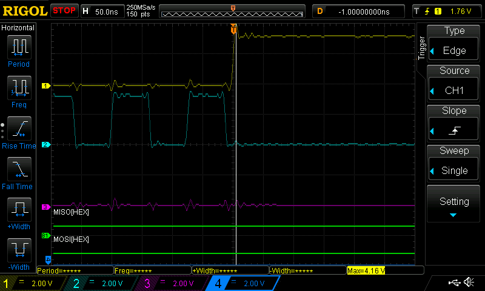
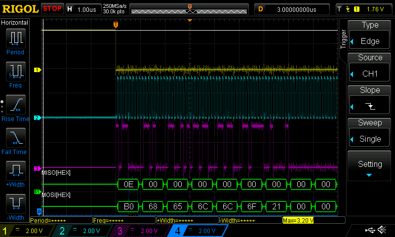

Nordic semiconductorのトランシーバーnRF24L01+をESP32にSPI接続して実験してみました

対抗しているのはRaspiとnRF24L01+の組でそちらは
にあるライブラリやプログラムを使いました.
このトランシーバーはBTやWiFiではなくShockburstという形式で通信します. コンフィグでACKを必要としないたれ流しができそうなのでレイテンシが減らせるか試そうと思っています. リアルタイムのIMUデータとかなんども再送されてもあまりうれしくないしというのがもともとの動機です.
SPIでつなぐこと自体は簡単でGPIOの番号を
#define PIN_NUM_MISO 19
#define PIN_NUM_MOSI 23
#define PIN_NUM_CLK 18
#define PIN_NUM_CS 5
としています. SPI以外にnRF24L01+のRFトランシーバーをイネーブルするCEと割り込みの/INTを
#define GPIO_NRF24_INT GPIO_NUM_22
#define GPIO_NRF24_CE GPIO_NUM_21
につなぎました. SPIのコンフィグは
spi_bus_config_t buscfg={ .miso_io_num=PIN_NUM_MISO, .mosi_io_num=PIN_NUM_MOSI, .sclk_io_num=PIN_NUM_CLK, .quadwp_io_num=-1, .quadhd_io_num=-1, .max_transfer_sz=0 }; spi_device_interface_config_t devcfg={ .command_bits=8, .address_bits=0, .dummy_bits=0, .clock_speed_hz=8000000, //Clock out at 8MHz .duty_cycle_pos=128, .mode=0, //SPI mode 0 .cs_ena_posttrans=1, .spics_io_num=PIN_NUM_CS, //CS pin .queue_size=1, //queue size .flags=0, };
を使って簡単なSPIアクセスを試しました. 最初.cs_ena_posttrans=1を指定していなかったのですがこれがないとペイロードの読み書きのような多バイトのtransactionがうまくいかずパケットが飛びませんでした. ところが/csに指が触れたときにパケットが飛んだことからこれに気がつきました. nRF24L01+のドキュメントだとclockの立ち下がりと/csの立ち上がり間には2ns以上のhold timeが必要なのですが指定なしだとギリギリだめなんだと思われます. 指定すると
と/csがnegateされるのが少し遅れてhold timeの制約を満たしているのがわかります.
nRF24L01+のSPIの仕様で最初のバイトがコマンドを示すんですがそのバイト受信時にSPIのシフトレジスタからstatusレジスタの内容が出てくるようになっています
MISOの最初に見えている0Eがstatusレジスタの内容です. 上のESP32のSPIの設定だと.command_bits=8になっているのですがその間の受信データは無視されるようです.